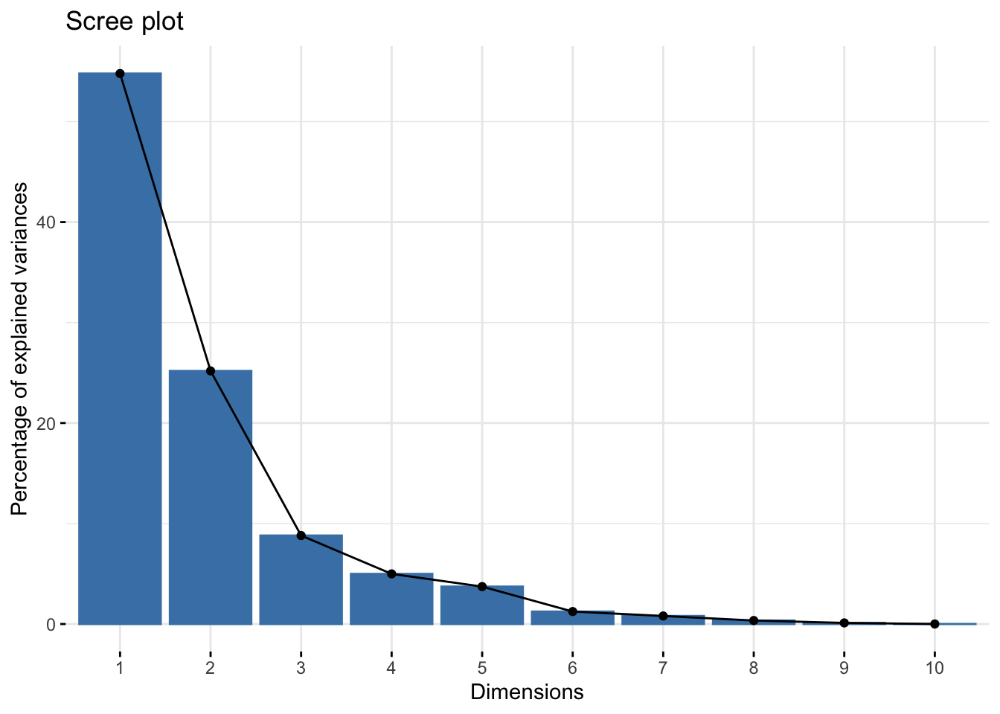
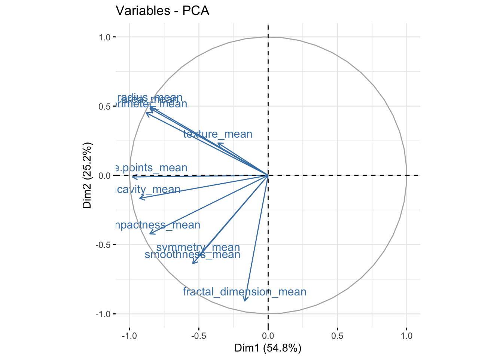
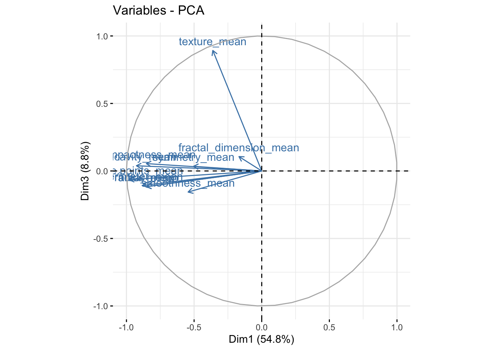
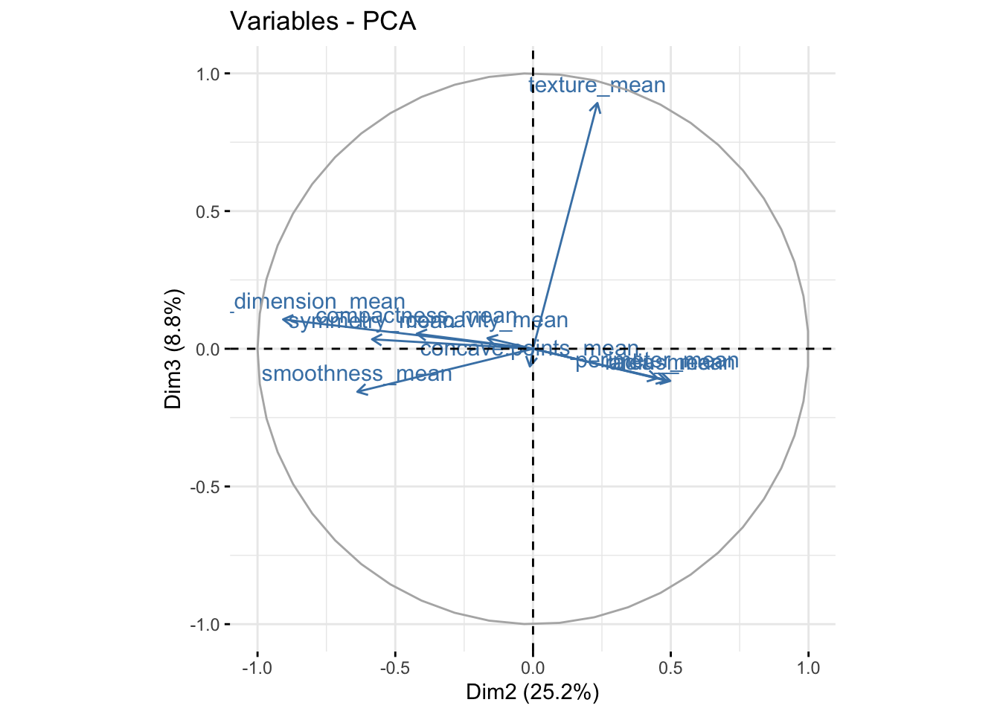
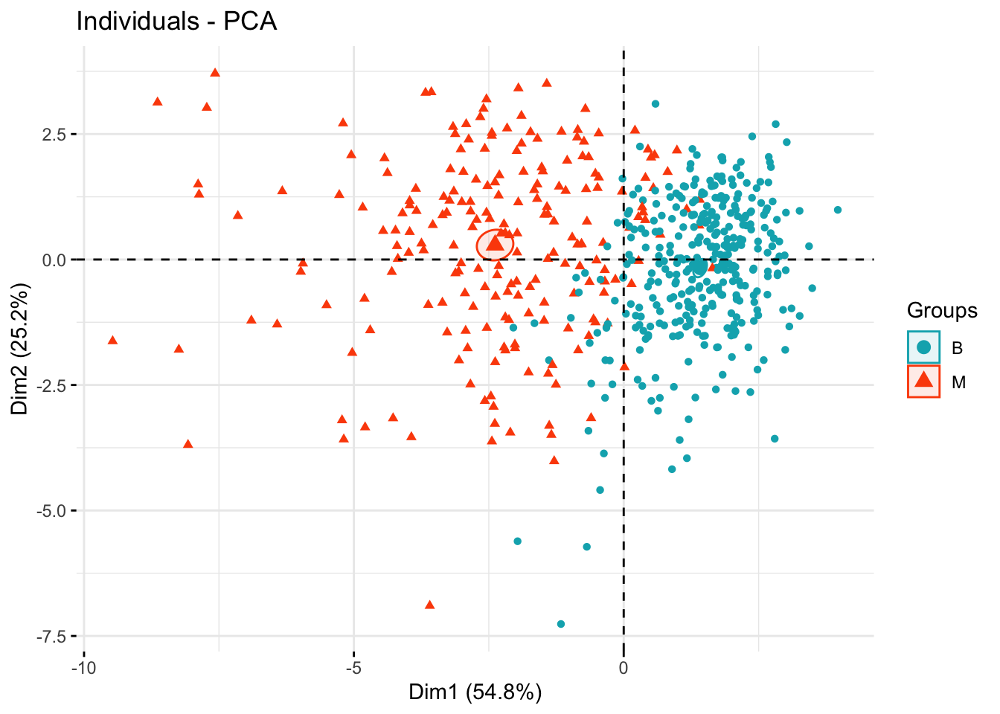
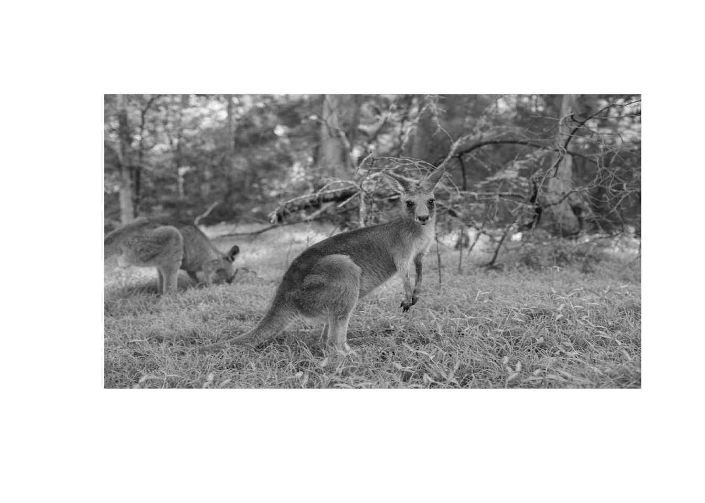
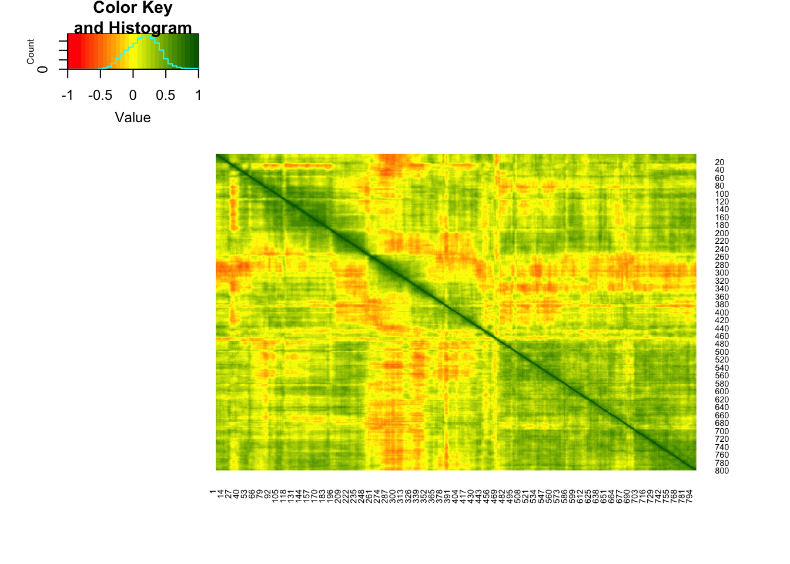
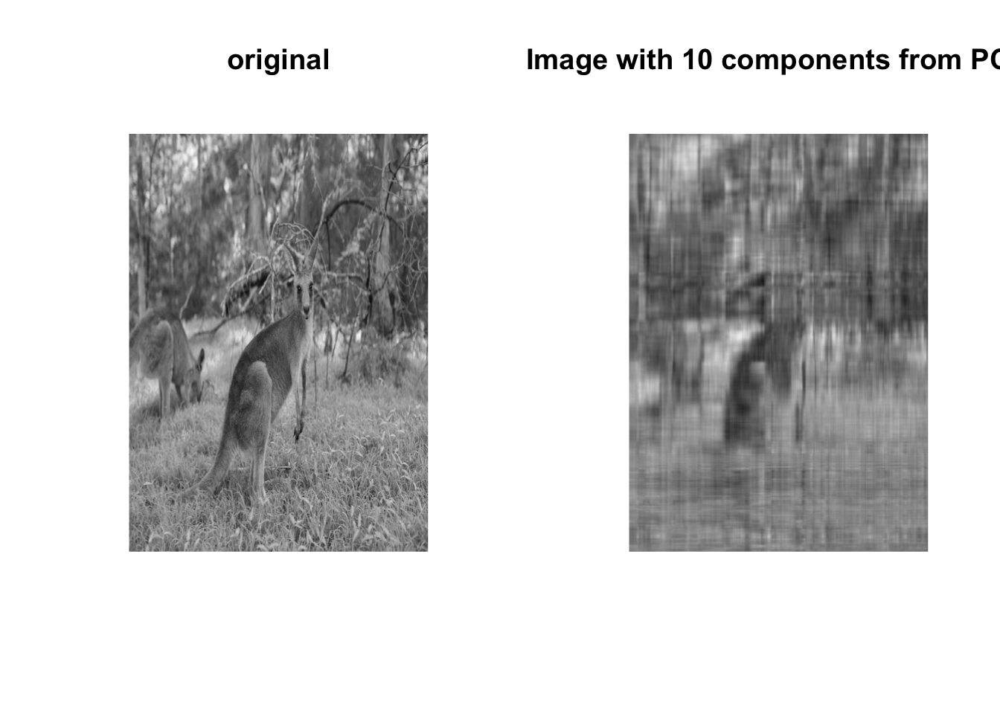
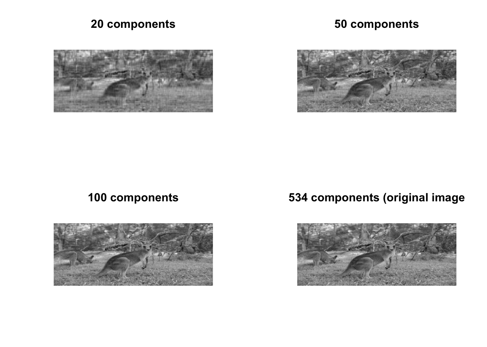
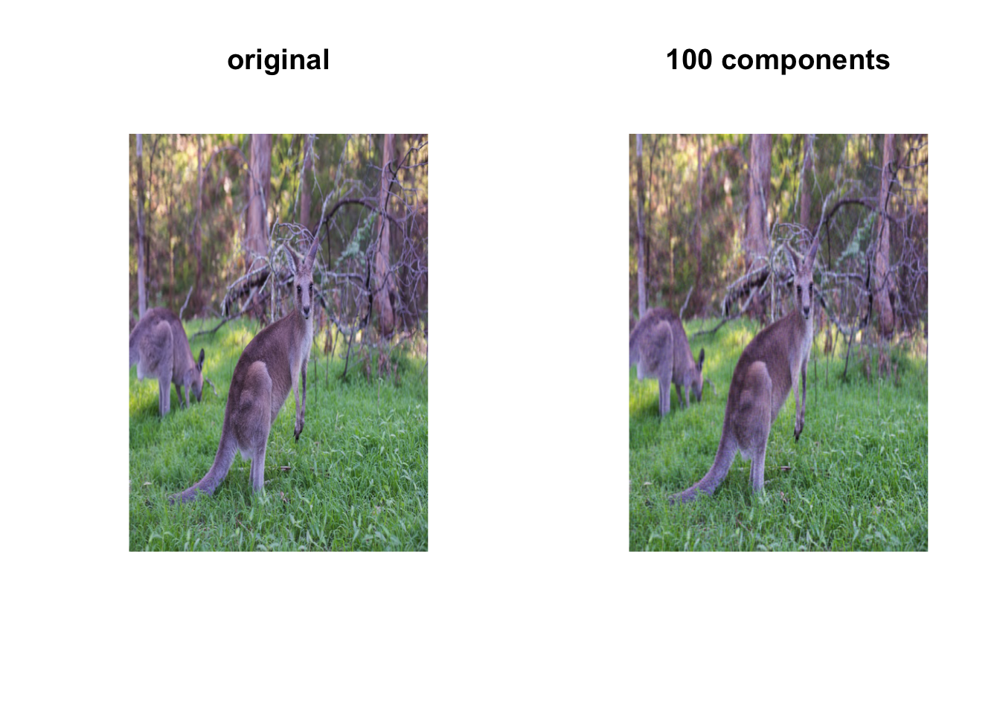

1 Principle components analysis
1.1 Introduction
Principal components analysis (PCA) is a data reduction (also referred to as dimension reduction) technique. Given a large set of variables, PCA identifies a small number of linear combinations (components) that retain most of the information of the variables.
Suppose we have \(p\) variables \(x_1,...,x_p\). A PCA analysis would identify, \(z_1,z_2,...\) components that are linear combinations of the original variables, \[ z_1 = \phi_{11}x_1 + \phi_{12}x_2 +... + \phi_{1p}x_p\\ z_2 = \phi_{21}x_1 + \phi_{22}x_2 +... + \phi_{2p}x_p\\ z_3 = \phi_{31}x_1 + \phi_{32}x_2 +... + \phi_{3p}x_p\\ \vdots \]
We will have up to \(p\) components (unless the number of observations is less than \(p\)), but hopefully the first components will explain most of the information and we can discard the others. This is why, PCA is called a data reduction method. There are two extreme situations: all the variables were completely independent and in this case, the number of “important” components would be the same as the number of variables, or all the variable are perfectly correlated so 1 component would retain all the information
For simplicity, let’s assume that variables \(x_1,...,x_p\) are scaled to have standard deviation and mean 0. For the first component,
\[ z_1 = \phi_{11}x_1 + \phi_{12}x_2 +... + \phi_{1p}x_p\\ \]
we need to find the component loading vector \((\phi_{11}, \phi_{12},... \phi_{1p})\) that has the largest variance. We want to constrain \(\sum_{j1}^{p}{\phi^2_{j1}=1}\) otherwise the variance would increase just by increasing the magnitude of the \(\phi_{j1}\)’s.
Formally, we want to find the loading vector that \(\text{maximise } var(z_1)\) subject to \(\sum_{j1}^{p}{\phi^2_{j1}=1}\). Given that \(z_1\) has mean zero,
\[ \text{maximise } var(z_1) = \text{maximise } \frac{1}{n}\sum_{i=1}^{n}z^2_{ij} = \\ = \text{maximise } \frac{1}{n}\sum_{i=1}^{n} \left(\sum_{j=1}^{p}\phi_{j1}x_{ij}. \right)^2 \]
Geometrically the \(z_1\) is a projection of the vectors \(x_1,...,x_p\) into a real line. We want this projection to have the direction that maximises the variance. Consider the figure below representing only 2 variables \(x_1,x_2\). The first component, is the line where the projected points have higher dispersion (variance). The points projected on the line in the right, show a higher variance than the one in the left.
{kind=link}
Once we have found the first component, the next ones are found in a similar fashion but with the additional requirement of orthogonality, i.e., the components need to be independent of each other (orthogonal).
The solution for the maximisation problem above is found using eigen decomposition where the eigenvectors are the components of the PCA (if you are interested in the mathematical details, you can find some more information in the optional readings).
PCA can be used to see how variable get “clustered” together into the components and how groups are characterised in terms of the components. More commonly, PCA is used as a pre-processing step to reduce the dimensionality of the data and then the main components in a classification of regression algorithm,
The following is an external video produced by Dr. Josh Starmer, creator of the channel StatQuest. It gives a simple overview of the geometrical construction of the PCA that might be useful before you do the readings.
1.2 Readings
Read the following chapters of An introduction to statistical learning:
- 6.3 Dimension Reduction Methods - excluding 6.3.12
- 10.2 Principal Components Analysis
- [Optional - Mathematical details of PCA] - (https://towardsdatascience.com/the-mathematics-behind-principal-component-analysis-fff2d7f4b643)
1.3 Practice session
TASK 1 - Identify the principal components
Using the bdiag.csv, let’s run a PCA for several characteristics of cells. …
#libraries that we will need
set.seed(1974) #fix the random generator seed #read the dataset
bdiag.data <- read.csv("https://www.dropbox.com/s/vp44yozebx5xgok/bdiag.csv?dl=1",
stringsAsFactors = TRUE)
bdiag.pca.data <- bdiag.data[,c("radius_mean", "texture_mean",
"perimeter_mean", "area_mean", "smoothness_mean", "compactness_mean",
"concavity_mean", "concave.points_mean", "symmetry_mean", "fractal_dimension_mean")]
bdiag.pca <- prcomp(bdiag.pca.data, scale=TRUE) #pca with scaled variablesThe prcomp() function will include in its results
- sdev - the standard deviations of the principal components
- rotation - the matrix of variable loadings for the components
- x - the scaled matrix of data times the factor loadings (scores as defined in the An introduction to statistical learning book, page 376)
We now can see how much variance is explained by the components. We will
use some functions of the package factoextra to plot some of the results.
The plot representing the variance explained by the components is called Scree Plot.
library(factoextra)## Loading required package: ggplot2## Welcome! Want to learn more? See two factoextra-related books at https://goo.gl/ve3WBasummary(bdiag.pca) #variance explained## Importance of components:
## PC1 PC2 PC3 PC4 PC5 PC6 PC7
## Standard deviation 2.3406 1.5870 0.93841 0.7064 0.61036 0.35234 0.28299
## Proportion of Variance 0.5479 0.2519 0.08806 0.0499 0.03725 0.01241 0.00801
## Cumulative Proportion 0.5479 0.7997 0.88779 0.9377 0.97495 0.98736 0.99537
## PC8 PC9 PC10
## Standard deviation 0.18679 0.10552 0.01680
## Proportion of Variance 0.00349 0.00111 0.00003
## Cumulative Proportion 0.99886 0.99997 1.00000fviz_eig(bdiag.pca) #scree plot
The first 2 components explain approximately 80% of the total variation and 3 components, almost 90%. The number of components that one wants to retain is problem specific and it is a trade-off between information and low-dimensionality.
It is also useful to look at the contribtion of each variable in the different components.
#loading vectors
par(mfrow=c(1,3))
fviz_pca_var(bdiag.pca, col.var = "steelblue") # comp 1 vs 2
fviz_pca_var(bdiag.pca, col.var = "steelblue",axes=c(1,3)) # comp 1 vs 3
fviz_pca_var(bdiag.pca, col.var = "steelblue",axes=c(2,3)) # comp 2 vs 3
We can see in the plot above that among the 3 components, fractal_dimension_mean contributes mostly to component 2 whereas e.points_mean is contributing to component 1.
TRY IT YOURSELF:
- Get the PCA using the
eigen()function that computes eigenvectors and eigenvalues for a matrix.
See the solution code
#first scale the data
bdiag.scaled <- apply(bdiag.pca.data, 2, scale) #apply scale to columns
#get the covariance matrix
cov.bdiag <- cov(bdiag.scaled)
#Get the eigenvalues and eigenvectors
#of the covariance matrix
ev.bdiag <- eigen(cov.bdiag)
#The sqrt of the eigenvalues are the std
#deviations of the compontents
sqrt(ev.bdiag$values) #equal to bdiag.pca$sdev
#And the eigenvectors are the principal components.
ev.bdiag$vector #equal to bdiag.pca$rotation (up to the sign)
TASK 2 - Use PCA in a prediction model
We will continue from Task 1 and use some of the principal components as predictors in a logistic model for the variable diagnosis.
The figure below shows the separations of the two diagnoses groups B and M in terms of the the principal components.
groups <- bdiag.data$diagnosis
fviz_pca_ind(bdiag.pca,
col.ind = groups, # color by groups
palette = c("#00AFBB", "#FC4E07", "blue", "red"),
addEllipses = TRUE, # Concentration ellipses
ellipse.type = "confidence",
legend.title = "Groups",
repel = FALSE,
label="none",
axes=c(1,2)
)
The package caret includes PCA as a pre-processing option. We will use 3
principal components to predict diagnosis
library(caret)## Loading required package: latticetrctrl <- trainControl(method = "repeatedcv",
number = 10,
preProcOptions =list(pcaComp = 3), #or list(thresh = 0.99),
classProbs = TRUE,
summaryFunction = twoClassSummary)
bdiag.glm <- train(diagnosis ~ radius_mean + texture_mean +
perimeter_mean + area_mean +
smoothness_mean + compactness_mean +
concavity_mean + concave.points_mean +
symmetry_mean + fractal_dimension_mean,
data = bdiag.data,
method = "glm",
family=binomial,
trControl = trctrl,
preProcess=c("center", "scale", "pca"), #uses PCA
metric="ROC")
bdiag.glm## Generalized Linear Model
##
## 569 samples
## 10 predictor
## 2 classes: 'B', 'M'
##
## Pre-processing: centered (10), scaled (10), principal component
## signal extraction (10)
## Resampling: Cross-Validated (10 fold, repeated 1 times)
## Summary of sample sizes: 512, 512, 512, 512, 512, 513, ...
## Resampling results:
##
## ROC Sens Spec
## 0.9834474 0.9605556 0.8863636The prediction accuracy is excellent with three components. We can get the coefficients for these components but they don’t have an obvious interpretation.
summary(bdiag.glm)##
## Call:
## NULL
##
## Deviance Residuals:
## Min 1Q Median 3Q Max
## -2.9444 -0.1798 -0.0479 0.0283 3.2499
##
## Coefficients:
## Estimate Std. Error z value Pr(>|z|)
## (Intercept) -0.5911 0.2022 -2.923 0.00347 **
## PC1 -2.7029 0.2882 -9.379 < 2e-16 ***
## PC2 0.8271 0.1509 5.481 4.22e-08 ***
## PC3 0.7430 0.2144 3.465 0.00053 ***
## ---
## Signif. codes: 0 '***' 0.001 '**' 0.01 '*' 0.05 '.' 0.1 ' ' 1
##
## (Dispersion parameter for binomial family taken to be 1)
##
## Null deviance: 751.44 on 568 degrees of freedom
## Residual deviance: 172.10 on 565 degrees of freedom
## AIC: 180.1
##
## Number of Fisher Scoring iterations: 8And the principal components matrix:
bdiag.glm$preProcess$rotation## PC1 PC2 PC3
## radius_mean -0.36393793 0.313929073 -0.12442759
## texture_mean -0.15445113 0.147180909 0.95105659
## perimeter_mean -0.37604434 0.284657885 -0.11408360
## area_mean -0.36408585 0.304841714 -0.12337786
## smoothness_mean -0.23248053 -0.401962324 -0.16653247
## compactness_mean -0.36444206 -0.266013147 0.05827786
## concavity_mean -0.39574849 -0.104285968 0.04114649
## concave.points_mean -0.41803840 -0.007183605 -0.06855383
## symmetry_mean -0.21523797 -0.368300910 0.03672364
## fractal_dimension_mean -0.07183744 -0.571767700 0.11358395TRY IT YOURSELF:
- Fit a random forest to predict diagnosis using 7 principal components and cross-validating the number of variables used in each split.
See the solution code
trctrl <- trainControl(method = "repeatedcv",
number = 10,
preProcOptions =list(pcaComp = 7),
classProbs = TRUE,
summaryFunction = twoClassSummary)
bdiag.rf <- train(diagnosis ~ radius_mean + texture_mean +
perimeter_mean + area_mean +
smoothness_mean + compactness_mean +
concavity_mean + concave.points_mean +
symmetry_mean + fractal_dimension_mean,
data = bdiag.data,
method = "rf",
family=binomial,
trControl = trctrl,
preProcess=c("center", "scale", "pca"), #uses PCA
ntree = 100,
tuneGrid = expand.grid(mtry = c(1:7)),
metric="ROC")
bdiag.rf
TASK 3 - Use PCA to compress an image
This is not a typical Biostats problem, but it illustrates the idea behind PCA. Let’s consider an original image roo.jpg. For simplicity we will only use the green channel information (the original image has 3 channels: red, green and blue). This will correspond to a black and white image.
{kind=link}
library(jpeg)
library(graphics)
#the jpeg has 3 channels: red,green, blue
#for simplicity of the example, I am only
#reading the green channlel
roo <- readJPEG("roo.jpg")[,,2]
#You can have a look at the image
plot(1:2, type='n', axes=F, ann=F)
rasterImage(roo, 1, 2, 2, 1)
An image is a matrix of pixels with values that represent the intensity of the the pixel, where 0=white and 1=black. In this case, the image is 800x534 pixels as you can see by the dimension of the matrix.
dim(roo)## [1] 534 800As we would expect, there are several places in the photo where columns of pixels are strongly correlated with adjacent columns:
library(gplots)##
## Attaching package: 'gplots'## The following object is masked from 'package:stats':
##
## lowess#color for the heatmap
col.correlation <- colorRampPalette(c("red","yellow","darkgreen"),
space = "rgb")(30)
heatmap.2(cor(roo),
Rowv = F, Colv = F,
dendrogram = "none",
trace="none",
col=col.correlation)
Therefore, PCA we should be able to reduce the original dimension (800x534) while keeping a substantial part of the information.
Out of the 534 components, the first 10 components produce the following image.
Note: despite having 800 “variables” columns, there are only 534 rows and we cannot have more components than rows. In fact, we should only have 533 components, but given that we did not centre the data, we have 534.
#All the columns with the intensities are in the same scale so
#we do not need to scale them
#Also, we do not want to centre the columns otherwise
#the values can no longer be interpreted as intensities and
#we will not be able to plot the results
#PCA
roo.pca <- prcomp(roo, center = FALSE)
#The intensities given by the first 10 components
roo.pca10 <- roo.pca$x[,1:10] %*% t(roo.pca$rotation[,1:10])
#this is just to make sure all the values
#remain within 0 and 1 (due to rounding in the
#calculation, sometimes the values go slightly higher than 1)
roo.pca10[roo.pca10>1] <-1
roo.pca10[roo.pca10<0] <-0
#You can have a look at the image
par(mfrow=c(1,2))
plot(1:2, type='n', axes=F, ann=F)
title ("original")
rasterImage(roo, 1, 2, 2, 1)
plot(1:2, type='n', axes=F, ann=F)
title("Image with 10 components from PCA")
rasterImage(roo.pca10, 1, 2, 2, 1)
Notice that we are using only 10 of the 534 components. If we had used all the components we would have the original image. Let’s see the image with different number of components
# Intensities with 20, 50, 100 and 534 components
roo.pca.j <- lapply(c(20, 50, 100, 534), function(j) {
jcomp <- roo.pca$x[,1:j] %*% t(roo.pca$rotation[,1:j])
jcomp[jcomp>1] <-1
jcomp[jcomp<0] <-0
return(jcomp)
}
)
par(mfrow=c(2,2))
plot(1:2, type='n', axes=F, ann=F)
title ("20 components")
rasterImage(roo.pca.j[[1]], 1, 2, 2, 1)
plot(1:2, type='n', axes=F, ann=F)
title("50 components")
rasterImage(roo.pca.j[[2]], 1, 2, 2, 1)
plot(1:2, type='n', axes=F, ann=F)
title("100 components")
rasterImage(roo.pca.j[[3]], 1, 2, 2, 1)
plot(1:2, type='n', axes=F, ann=F)
title("534 components (original image")
rasterImage(roo.pca.j[[4]], 1, 2, 2, 1)
TRY IT YOURSELF:
- Produce the image above with 100 components but using the colored photo.
See the solution code
roo <- readJPEG("roo.jpg")
# roo is now a list with three elements
#corresponding to the channels RBG
#we will do PCA in each element
roo.rbg.pca<- apply(roo, 3, prcomp, center = FALSE)
#Computes the intensities using 100 components
roo.pca2 <- lapply(roo.rbg.pca, function(channel.pca) {
jcomp <- channel.pca$x[,1:100] %*% t(channel.pca$rotation[,1:100])
jcomp[jcomp>1] <-1
jcomp[jcomp<0] <-0
return(jcomp)})
#Transforms the above list into an array
roo.pca2<-array(as.numeric(unlist(roo.pca2)),
dim=c(534, 800, 3))
#You can have a look at the image
par(mfrow=c(1,2))
plot(1:2, type='n', axes=F, ann=F)
title ("original")
rasterImage(roo, 1, 2, 2, 1)
plot(1:2, type='n', axes=F, ann=F)
title ("100 components")
rasterImage(roo.pca2, 1, 2, 2, 1)
1.4 Exercises
Solve the following exercises:
- The dataset fat is available in the library(faraway).
The data set contains several physical measurements.
Using the variables age, weight, height, adipos, free, neck, chest, abdom, hip, thigh, knee, ankle, biceps, forearm and wrist
How many components explain at least 95% of the variance?
Identify 2 variable that seem to have a stronger contribution to the 2nd principle component.
Compare the adjusted-\(r^2\) for a linear model for brozek using all the predictors and a linear model only using 2 principal components to predict brozek.